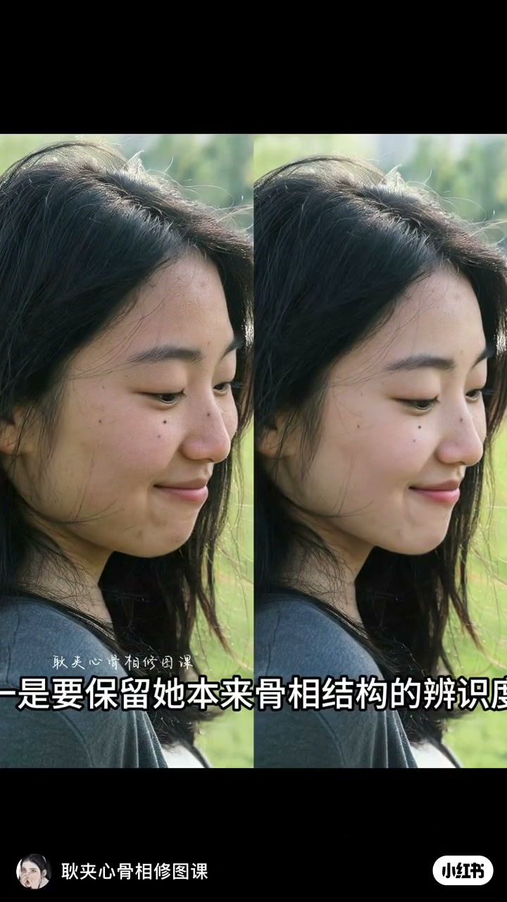
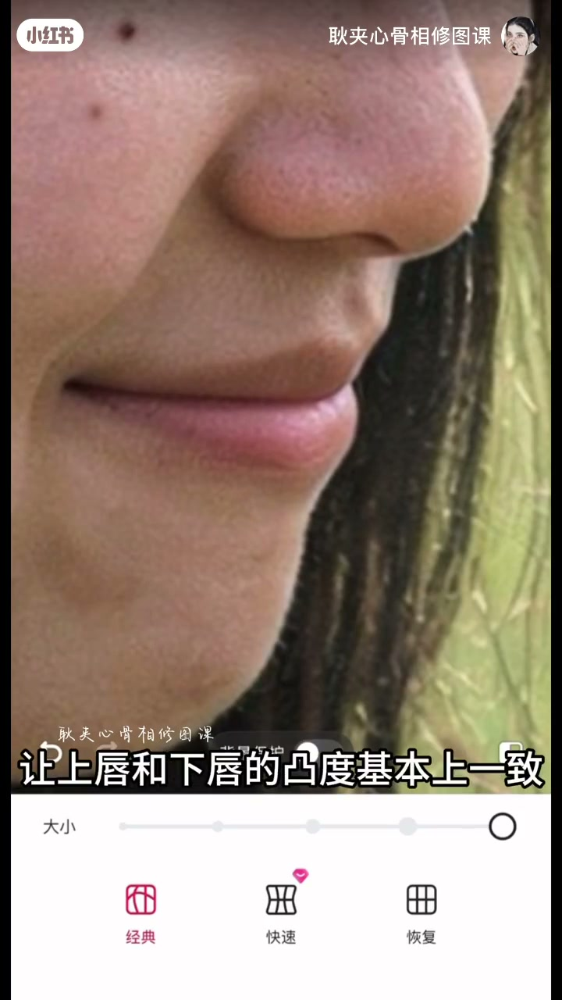
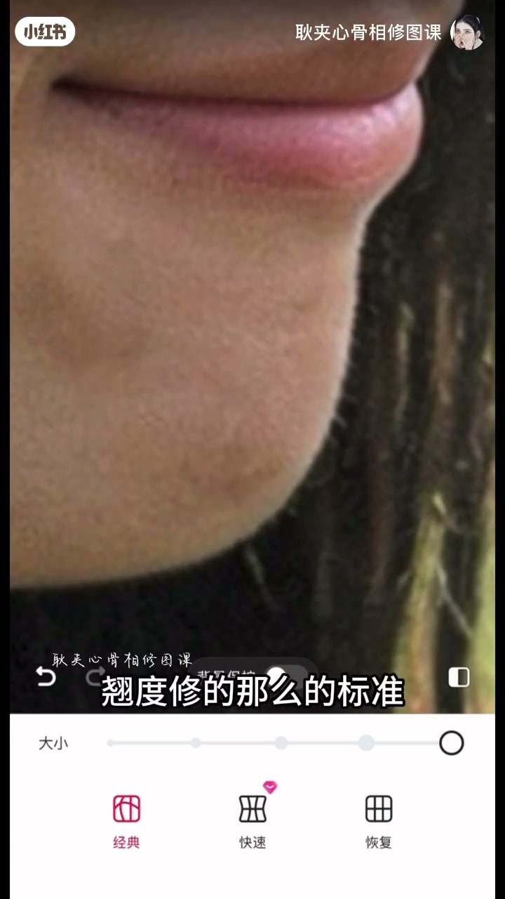
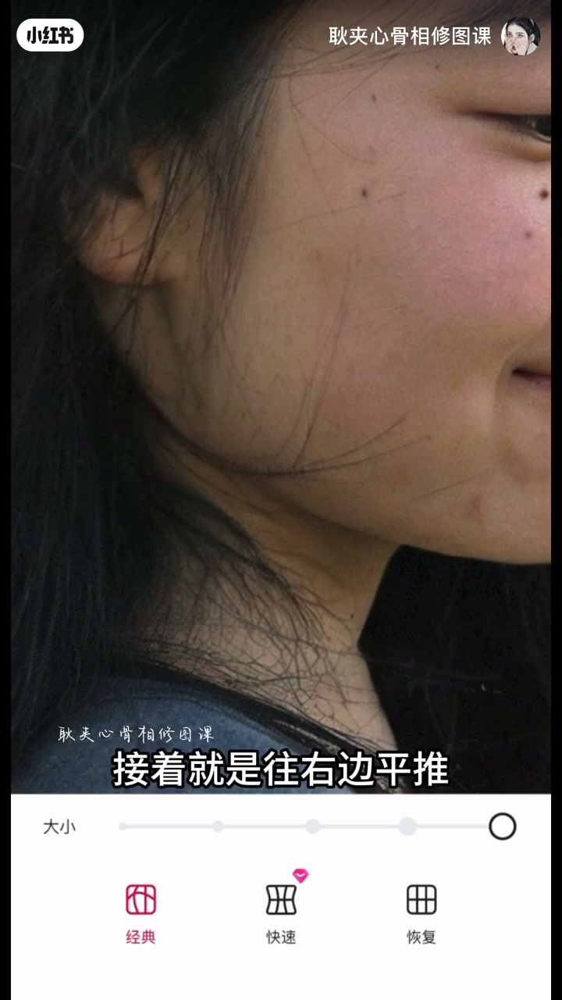
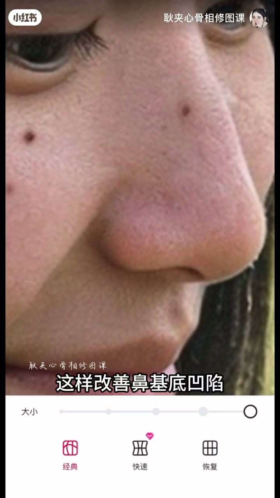
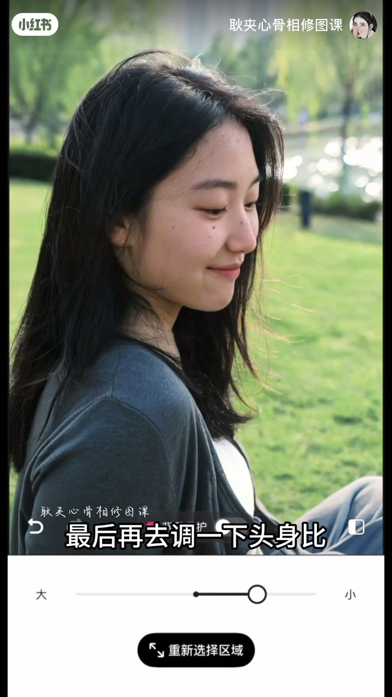

内容要点
「耿夹心骨相修图课」给「修了像没修」定两条铁律：保留原骨相辨识度、保留皮肤原生质感。案例主诉轻微地包天+下巴后缩：收下唇对齐凸度、推出颏唇沟、拉高并外带下巴但不过度标准化，上推下颏囤积、保留下颌角拐点并平推增加折叠度，再收颧、推鼻翼、蓬松颅顶，最后调头身比看对比。
知识结构
保留骨相辨识度 + 皮肤原生质感；先收下唇、推颏唇沟。
拉高下巴后要外带平衡下庭；上推厚重区；保留下颌角拐点并平推增折叠。
收凸颧、推鼻头鼻翼改善凹陷、额结节与颅顶、后脑勺推圆做头包脸。
调头身比；对比强调自然不假面、保留原生质感。
隐形高清骨相=结构只挪该挪的毫米，皮肤与骨相身份绝不磨平。
00:00-01:07下唇—颏唇沟—下颌角拐点
精髓两条：一保留本来骨相结构的辨识度（ASR「古相…便是度」），二保留皮肤原生质感。案例：下唇略地包天+下巴后缩。先收下唇使上下唇凸度一致，再推出颏唇沟（下唇与下巴之间的小凹线）。
下巴右推并拉高后，下庭比例会失调，需向外适当拉出——「不需要把下巴长度和翘度修得那么标准」。后缩带来的颏下厚重往上推；保留下颌角「拐点」（ASR「怪垫」），再向右平推增加面部折叠度。三点微调后面型已协调很多。



01:07-02:37细节、头包脸与自然对比
细节：凸颧内收；鼻头右上、鼻翼右前，改善鼻旁凹陷；额结节推出；头发蓬松、颅顶拉高、后脑勺推圆，更有头包脸（ASR「头包铃」）。
片尾约2分29秒起调头身比，并排放对比：保留原生质感，自然不假面——呼应开场「修了像没修」。



完整转录（42段）
以下文本由 Whisper medium 模型自动转录，可能存在少量识别误差，已尽可能修正。
这种修了相没修,还美貌似似似的修图的精髓在哪里
一是要保留他本来古相结构的便是度
二是要保留皮肤的原生质感
这小姐姐主要是下唇有一点点低包天
再加上有些下巴后缩
第一步咱们先去把整个下唇往内收
让上唇和下唇的凸度基本上一致
再去推出来一点点的这个科唇脚
也就是下唇和下巴的一个小凹线
下巴往右边去推
就是像这样一位的去拉高
下巴虽然拉高了
但是整个下停的比例是完全失调了
咱们要去往这个方向去修
适当的去拉出来一些
不需要把下巴的长度和翘度修得那么的标准
因为之前有点下巴后缩
所以会导致就是下巴下方这一块有点厚重
也就是肉堆积的比较多
咱们往上去推
整个下额往上推
这边也往上来一点
要保留这个下颌角怪垫
接着就是往右边平推
增加面部折叠度
来看一下我们微调这三个点之后的变化
面型会协调很多
接着再调整一些细节
比如说右边的这个颧骨有一点点凸
往内收一些
鼻头往右上方推一点点
鼻翼也往右前方去带
这样改善鼻涕的凹陷
额节节推出来
然后头发推推蓬松
颅顶这一块拉高一些
后脑勺也要推圆一些
更有头包铃
最后再去调一下头身饼
来看一下这个对比
保留了原生质感
并且非常自然不假面